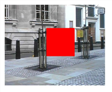
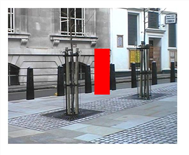

要从图像序列中删除不需要的对象，请执行以下操作:
| 1。 | 选择 图像 > 阅读 用不需要的对象加载序列。 |
| 2. | 选择 FurnaceCore > F_RigRemoval 并将您的图像序列连接到 F_RigRemoval Src 输入。查看 F_RigRemoval 的输出。 |
| 3. | 在每个帧上，定义要修复的区域。您可以通过以下三种方式做到这一点: |
• 如果图像序列具有嵌入的 alpha 通道，则可以使用该 alpha 来定义要修复的区域。要这样做，设置 钻机区域 到 Src 阿尔法 .
• 使用 F_RigRemoval RigMask 输入，您可以输入一个模糊序列来定义要修复的区域。要使用此哑光，请设置 钻机区域 到 钻机面具阿尔法 (或另一个 钻机面罩 选项)。
• 您可以使用屏幕上的矩形来定义要修复的区域。要这样做，设置 钻机区域 到 盒子 。将屏幕上的矩形定位在不需要的对象的顶部。要将对象跟随的位置设置为关键帧，请选择 设置密钥 从旁边的动画菜单 钻机区 BL 和 钻机区域 TR 在 钻机区域框 参数组。移动到新框架并重新定位屏幕上的矩形。自动设置新的关键帧。根据需要重复，直到矩形覆盖要从中删除对象的每个帧上的对象。
无论你选择哪种方法，该区域不需要是确切的前景区域，而只是一个粗略的轮廓。但是，您应该避免使其变得不必要的大，因为这会增加渲染时间。
| 4. | 定义了要在整个剪辑中修复的区域后，设置 帧范围 插件需要向前和向后分析的帧数量，以找到足够的数据来修复序列。在第一帧，这将是相当耗时的，因为算法需要估计每对帧之间的运动。随后的帧将更快。 |
| 5. | 如果无法替换所有前景像素，要么是因为 帧范围 如果设置得太低或背景信息不存在于序列中的任何地方，则像素将显示为红色。试着调整 帧范围 直到没有红色像素可见，然后渲染序列。 |
下面，在左边的图中，我们使用一个框来定义要替换的像素, 帧范围 设置为零。增加此值，如右图所示，从其他帧收集像素并改进结果。要完全删除红色像素，您需要一个 帧范围 值为 5。
|
 |
 |
|
帧范围 = 0。 |
帧范围 = 3。 |
| 6. | 查看结果。 |
|
|
|
|
原始图像。 |
F_RigRemoval 的输出。 |
提示:
F_RigRemoval 的过程相当缓慢，这可能会使矩形区域的初始关键帧令人沮丧。
有时，调整区域的最简单方法是加载 F_RigRemoval，并查看源，以便不处理效果，但参数是可见的。然后，在您试图在整个序列中移除的前景对象上设置矩形区域的动画。当你对区域位置满意时，点击 F_RigRemoval 的输出，等待它更新。慢慢增加
帧范围
参数，直到修复整个区域，然后检查其他帧上的输出。
注意: F_RigRemoval 使用当前帧周围大范围的帧。将一个 F_RigRemoval 节点的输出输入另一个节点将大大增加 head 上的内存，因为第二个 F_RigRemoval 节点将需要第一个 F_RigRemoval 节点在传递结果之前计算其所有帧。因此，强烈建议您处理第一个结果，然后将处理的结果与第二个 F_RigRemoval 节点一起使用。
|
|